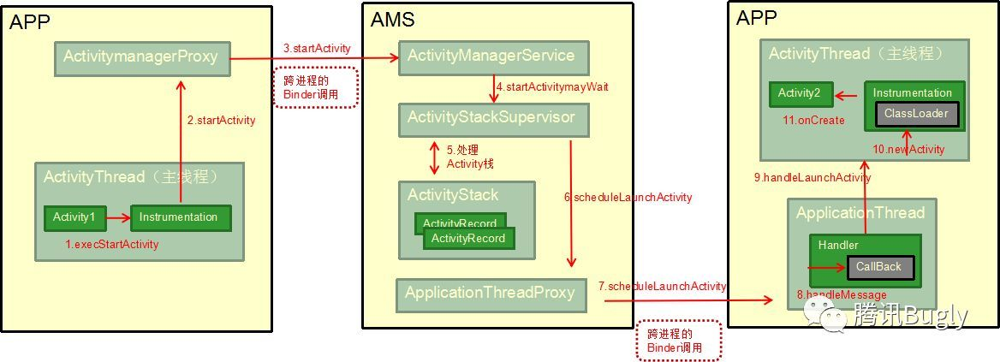
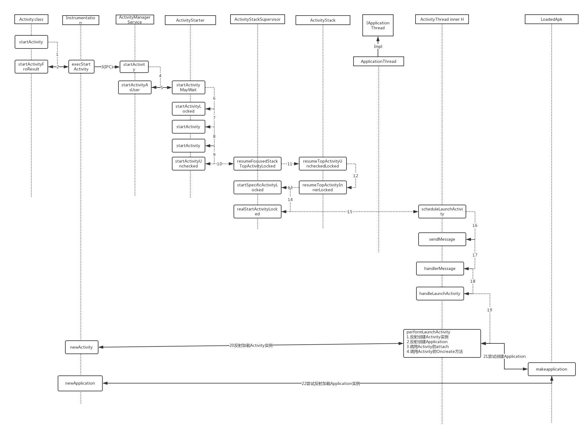

App启动过程

完整的流程如下：

上图列出的是启动一个 Activity 的主要过程，具体步骤如下：
- 1.Activity 调用 startActivity，实际会调用 Instrumentation 类的 execStartActivity 方法，Instrumentation 是系统用来监控 Activity 运行的一个类，Activity 的整个生命周期都有它的影子。
- 2.通过跨进程的 Binder 调用，进入到 ActivityManagerService 中，其内部会处理 Activity 栈。之后又通过跨进程调用进入到需要调用的 Activity 所在的进程中。
- 3.ApplicationThread 是一个 Binder 对象，其运行在 Binder 线程池中，内部包含一个 H 类，该类继承于类 Handler。ApplicationThread 将启动需要调用的 Activity 的信息通过 H 对象发送给主线程。
- 4.主线程拿到需要调用的 Activity 的信息后，调用 Instrumentation 类的 newActivity 方法，其内通过 ClassLoader 创建 Activity 实例。
Hook 原理
下面介绍如何通过 hook 的方式启动插件中的 Activity，需要解决以下两个问题：
- 插件中的 Activity 没有在 AndroidManifest 中注册，如何绕过检测。
- 如何构造 Activity 实例，同步生命周期。
我们这里使用最简单的一种实现方式：先在 Manifest 中预埋 StubActivity，启动时 hook 上图第 1 步，将 Intent 替换成 StubActivity。
1 | // StubActivity.java |
我们上面在 EvilInstrumentation 类里面实现了 execStartActivity 方法，现在我们在这里再加一些额外的逻辑。
1 | public ActivityResult execStartActivity(Context who, IBinder contextThread, IBinder token, Activity target, |
通过这种”移花接木”的方式绕过 AMS 验证，但是这里我们并没有完成对我们原本需要真正打开的 Activity 的创建。这里我们需要监听 Activity 的创建过程，然后在适当的适合将原本需要打开的 Activity 还原回来。
1 | public class ActivityThreadHandlerCallback implements Handler.Callback { |
我们设置在 handleMessage 里面还原我们最开始替换的 Activity，至此我们就实现了对于 startActivity 的完整 hook